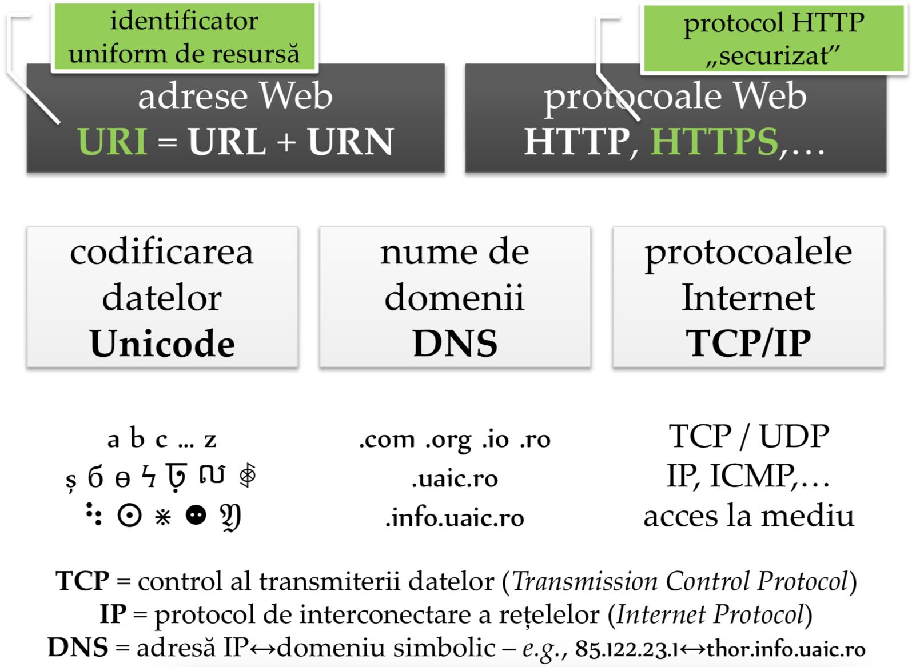
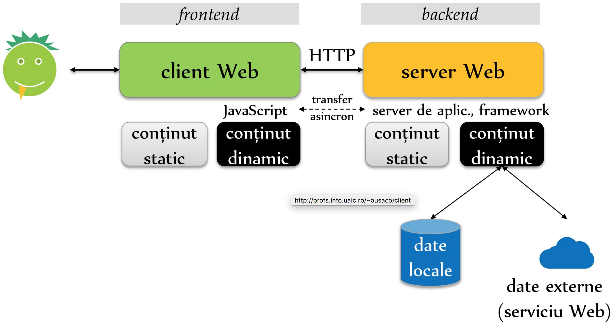
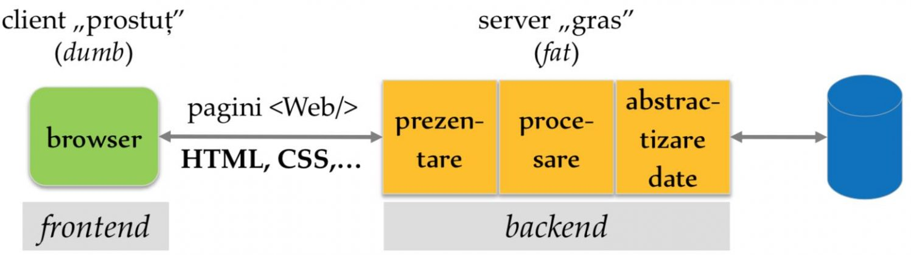
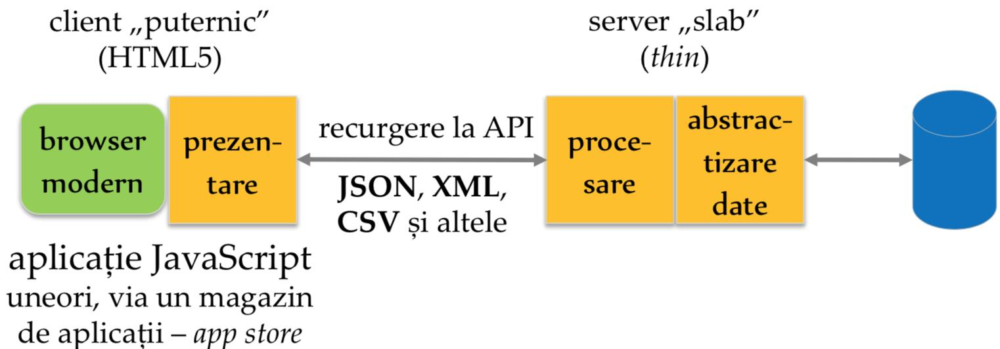
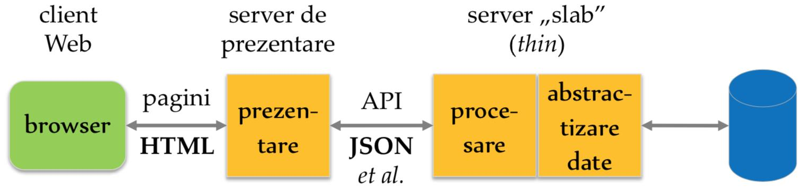
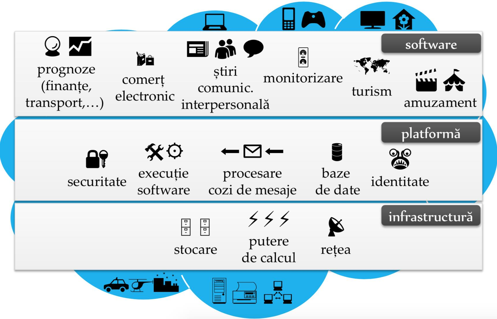
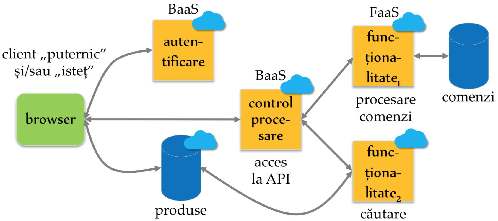
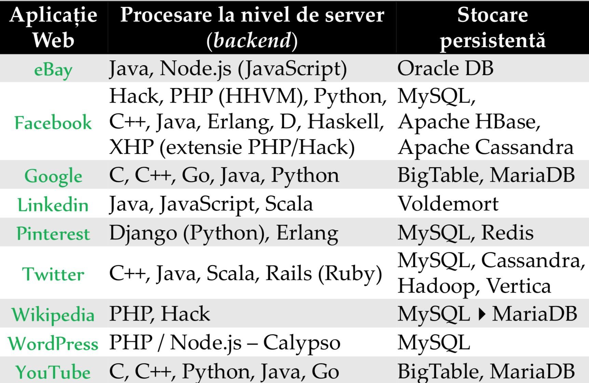

Data publicării: 29.10.2017
Autor articol: Sabin Buraga
Preambul
Conținutul acestui articol se bazează pe o prezentare realizată de autor în cadrul evenimentului SummerIS desfășurat în colaborare cu studenții în vara anului 2017 la Facultatea de Informatică a Universității “Alexandru Ioan Cuza” din Iași.
Tematica a luat în considerație problematicile actuale ale dezvoltării de aplicații Web. Scopul prelegerii a vizat înțelegerea de către elevii de liceu a ceea ce înseamnă spațiul World Wide Web (WWW), arhitectura și “ingredientele” fundamentale ale acestuia, plus rolurile pe care le au dezvoltatorii Web în crearea de software folosind diversele paradigme, standarde, specificații, limbaje de programare, instrumente și medii de lucru, reguli de bună practică în domeniu.
Astfel, în ceea ce urmează vom realiza o trecere în revistă a aspectelor esențiale referitoare la arhitectura aplicațiilor Web actuale, din prisma ingineriei Web. Vom urmări firul narativ al prezentării originale (Buraga, 2017a). Pentru alte detalii, a se studia siturile Web dedicate materiilor predate de autor:
- Tehnologii Web (din 1999) – http://profs.info.uaic.ro/~busaco/teach/courses/web/
- Dezvoltarea aplicațiilor Web la nivel de client (din 2010) – http://profs.info.uaic.ro/~busaco/teach/courses/cliw/
- Dezvoltarea aplicațiilor Web – inițial, denumit Semantic Web (din 2004): http://profs.info.uaic.ro/~busaco/teach/courses/wade/
Ce este Web-ul?
Inventat de Tim Berners-Lee în 1989, WWW (sau Web-ul) reprezintă un spațiu informațional comun în care comunicăm prin interconectarea și partajarea unor elemente de interes denumite resurse. Web-ul actual se bazează pe principii și standarde deschise stipulate de Consorțiul Web:
- Web for all and on everything – caracterul universal și ubicuu al Web-ului, inclusiv pentru persoane cu nevoi speciale, în mod independent de dispozitiv/software;
- Web for rich interaction – disponibilitatea unei pleiade de maniere de interacțiune complexă cu utilizatorul, adoptând diverse medii de comunicare, de la (hiper)text până la conținut multimedia și interacțiuni naturale;
- Web of data and services – acces descentralizat și deschis la date și funcționalități, indiferent de model/format de date și maniera de implementare;
- Web of trust – asigurarea încrederii la nivel global, prin adoptarea unor metodologii, standarde și proceduri vizând securitatea informatică (de la autentificare și autorizare, până la disponibilitatea serviciilor și intimitatea/anonimitatea utilizatorului).
Desigur, fiind un serviciu al Internetului, Web-ului adoptă modelul client/server. Clientul Web (navigator – browser Web, player multimedia, aplicație nativă rulând pe un calculator “clasic” (desktop) sau pe o platformă mobilă, robot al unui motor de căutare,…) preia/trimite conținuturi – adică date – (de) la un server Web.
Al doilea “ingredient” de bază este hipertextul (hipermedia): paginile Web – uzual, documente HTML (HyperText Markup Language) – includ referințe către alte resurse de interes via adrese (identificatori uniformi de resurse: URI – Uniform Resource Identifiers). Astfel, Web-ul poate fi considerat ca fiind un graf hipermedia, explorat pe baza interacțiunii cu utilizatorul via URI-uri (Buraga, 1999; Buraga, 2001; Buraga, 2005).
La nivel de server Web, resursele (conținuturile, adică reprezentările lor) solicitate de client – via un URL (Uniform Resource Locator), element al mulțimii URI-urilor – sunt stocate fie static (i.e. create manual), fie generate dinamic – pe baza unor programe implementând diverși algoritmi. Transferul datelor între client și server e stabilit de un protocol de comunicație – în cazul Web-ului, binecunoscutul HTTP (HyperText Transfer Protocol).
Nu vom intra aici în detalii, dar de interes este “eșafodajul” principal care poate fi urmărit în figura de mai jos.

Arhitectura aplicațiilor Web
Accesul la Web se poate efectua prin interacțiunea fie cu un sit Web, fie cu o aplicație Web. Situl Web reprezintă un sistem găzduind o serie de pagini (resurse) Web înrudite aparținând unei organizații, companii sau persoane. Aplicația Web poate fi considerată ca fiind o colecție interconectată de pagini Web cu conținutul generat dinamic, oferind o funcționalitate specifică.
“Dialogul” dintre utilizator(i) și aplicația în sine are loc via o interfață Web – principiile proiectării interfeței Web sunt expuse în lucrarea (Buraga, 2005). Accesul la datele puse la dispoziție de o anumită aplicație Web poate fi realizat prin intermediul (micro-)serviciilor Web, software ce oferă o funcționalitate particulară în urma căreia se obțin date de interes – uzual, apelând la o interfață de programare a aplicațiilor: API (Application Programming Interface).
Așadar, după cum se poate observa din ilustrația următoare, via o interfață Web, utilizatorul interacționează cu clientul (așa-numitul frontend) și inițiază acțiuni – e.g., cereri HTTP (a)sincrone – executate de diverse componente implementate la nivel de server (backend), pentru a obține date.

În mod tradițional, arhitectura unei aplicații Web se bazează pe paradigma MVC (Model View Controller) aliniată principiului de demarcare a responsabilităților (separation of concerns), notoriu în cadrul ingineriei software (Iftene, 2017; Richards, 2015).
Câteva dintre abordările comune vizând structura unei aplicații ce recurge la tehnologii Web sunt prezentate în figurile următoare – adaptare după van der Schee (2013).
- Abordare MVC tradițională:

- Abordare JavaScript pe baza API-ului oferit (necesită un browser Web modern, cu suport pentru suita de tehnologii HTML5) – o alternativă des pusă în practică este crearea de aplicații native ce vor rula pe sistemul de operare al clientului (desktop, dispozitive mobile, smart TV etc.):

- Abordare hibridă, ce recurge la un server de prezentare separat – drept cazuri tipice putându-se menționa un dispozitiv de redare a cărților electronice (book reader) sau un chioșc informativ (info kiosk):

Principalele entități pe care trebuie să le considerăm în crearea sau adoptarea unei arhitecturi de sistem Web sunt următoarele – amănunte în prezentarea (Buraga, 2017b):
- Client(i)
- Mandatar (proxy)
- Zid de protecție (firewall)
- Intermediar(i) (middleware)
- Server(e) Web
- Server(e) de aplicații
- Cadre de lucru (frameworks), biblioteci, componente etc.
- Server(e) de stocare persistentă – e.g., baze de date
- Server(e) de livrare a conținutului multimedia – uzual, ca flux de date (streaming)
- Server(e) de management al conținutului (exemple tipice: CMS – Content Management System, sisteme de editare colaborativă – wiki)
- Aplicații/sisteme tradiționale (legacy)
Abordările actuale recurg uzual la servicii disponibile în “nori” (cloud computing): partajarea la cerere a resurselor de calcul și a datelor cu alte calculatoare/dispozitive pe baza tehnologiilor Internet – a se considera (Alboaie, 2017). O privire de ansamblu e oferită de ilustrația de mai jos, Web-ul actualmente fiind o condiție sine qua non de funcționare a aplicațiilor în “nori”.

Alternative la abordarea clasică sunt arhitecturile fără server (serverless) în care aplicația Web depinde semnificativ de componente externe, disponibile în “nori”, adică recurgând la (micro-)servicii – viziunea și direcțiile de interes, în principal de natură arhitecturală, sunt expuse de articolele (Roberts, 2016) și (Lewis & Fawler, 2014).
Astfel, aplicația depinde de:
- Servicii de tip funcțional (FaaS – Functions As A Service) care implementează o funcționalitate specifică;
- Servicii de infrastructură (BaaS – Backend As A Service) folosite pentru coordonare, autentificare etc.
O posibilă arhitectură de aplicație Web este ilustrată de imaginea următoare.

Încheiem articolul cu o suită de exemplificări de instrumente software folosite de diverse aplicații Web de anvergură pentru procesarea la nivel de server și stocarea persistentă a datelor, pe baza serviciilor, platformelor și infrastructurilor actuale puse la dispoziție de diverși ofertanți.

Referințe bibliografice
- Alboaie, L., Cloud Computing, Facultatea de Informatică, Universitatea “Alexandru Ioan Cuza” din Iași, 2017: http://profs.info.uaic.ro/~adria/teach/courses/CloudComputing/
- Buraga, S., “Hipermedia: multimedia + hiperlegături”, PC Report, vol.8, 5 (80), mai 1999.
- Buraga, S., Tehnologii Web, Matrix Rom, 2001.
- Buraga, S., Proiectarea siturilor Web (Ediția a doua), Polirom, 2005.
- Buraga, S., Dezvoltator Web (…în 2017), Facultatea de Informatică, Universitatea “Alexandru Ioan Cuza” din Iași, 2017: http://www.slideshare.net/busaco/sabin-buraga-dezvoltator-web-n-2017
- Buraga, S., “Arhitectura aplicațiilor Web. Inginerie Web”, prezentare în cadrul disciplinei Tehnologii Web, Facultatea de Informatică, Universitatea “Alexandru Ioan Cuza” din Iași, 2017: http://profs.info.uaic.ro/~busaco/teach/courses/web/web-film.html#week3
- Iftene, A., Ingineria programării, Facultatea de Informatică, Universitatea “Alexandru Ioan Cuza” din Iași, 2017: http://profs.info.uaic.ro/~adiftene/Scoala/2017/IP/index.htm
- Lewis, J., Fowler, M., Microservices, 2014: http://martinfowler.com/articles/microservices.html
- Richards, M., Software Architecture Patterns, O’Reilly, 2015.
- Roberts, M., Serverless Architectures, 2016: http://martinfowler.com/articles/serverless.html
- van der Schee, M., “API First” Architecture, 2013: http://www.leaseweb.com/labs/wp-content/uploads/2013/10/api_first.pdf
- * * *, Microservices, 2017: http://microservices.io/